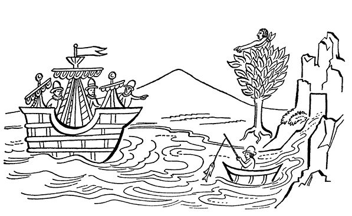

阿兹特克帝国驻华使馆
目录 |
第二章 西班牙人到来的最初消息
导 言
据费尔南多·阿尔瓦拉多·特索索默克在其《墨西哥编年史》一书中所说，蒙泰古祖玛被上述各种凶兆搅得心慌意乱，于是叫来他的智者，即巫师，向他们问个究竟。他想知道近期是否会有战事或灾难，抑或其他不幸的事情发生。 实际上，巫师们也无法回答。但是，正在此时从海湾沿岸来了一位贫穷的马赛瓦尔（村民），他带来消息说，一些像“高塔或小山一样的东西从大海上飘然而至”，上面坐着奇怪的人，“他们的皮肤比我们的白，大部分人留有美髯，长发遮耳……”这一消息使蒙泰古祖玛更加坐卧不安，这在下章可以看到。他因害怕便赶紧派出使者，带着礼物送给他所认为的克查尔克阿特尔和其他返回来的神祇。印第安人的抄本和传说中都预示这些神祇早晚会回来。
蒙泰古祖玛向巫师打探情况
蒙泰古祖玛令佩特拉卡卡特尔1将所有村镇的主管叫来，命令他们返回各自任职的地方寻找巫师，再把这些巫师带到宫廷。有些主管带来一些巫师，他们到达宫廷后，便马上禀告蒙泰古祖玛。巫师们进来见到蒙泰古祖玛时，单腿跪地行大礼。蒙泰古祖玛向他们问道： “尔等可曾在苍穹、大地、洞穴、大湖深处、桥洞、桥上、泉眼等处见过何等异物？可曾碰到过表情痛苦的妇人或男丁？可曾目睹过魔鬼和其他蹊跷之事？” 巫师们没有见到蒙泰古祖玛所说之事，也无从回答他的问题，于是他便令大总管：“将彼等狡猾之徒带走，关进瓜乌卡尔克的木牢里，看他们敢不交代！” 另日，又找来大总管，向其降旨： “去，对那些巫师说，让他们算算将来可会发生大病、瘟疫、饥荒、蝗灾、水下地震、旱灾？让他们交代会不会下雨？可有攻击墨西哥的战事？是否有人暴死街头或被外来动物咬死之事发生？叫那些巫师万勿隐瞒。还让他们交代，是否有人听到了声名显赫的西瓦克阿特尔女神2的哭泣，因为一旦有事要发生，在出事前很久此神便能预见到。” 巫师们回答大总管： “我们还有什么好说的呢？天上会发生什么事您已经说过了，连发生事情的名称都说到了。至于在蒙泰古祖玛身上会有什么事情发生嘛，的确，在他面前会有非常神秘的事情发生。如果我们的圣上想知道——虽然事情并不多，他很快就会明白，因为马上就会有人来向他禀告。为了让他感到满足，我们只能说那么多。该发生的事情总会发生，请他等一等吧。” 大总管把他们说的内容全部告诉了蒙泰古祖玛，并说肯定会有人来见他。蒙泰古祖玛感到十分惊讶，因为这和奈查瓦尔皮里，即特斯科科大公，奈查瓦尔克尤特尔3的儿子的说法一样。蒙泰古祖玛对大总管说： “去问问他们，这个要来的人从何而来，从天上还是从地上来？来自何地？” 大总管佩特拉卡卡特尔去向巫师们问个究竟，但当他推门进去的时候屋里已空无一人。大总管惊奇万分，只好又求见蒙泰古祖玛，说道： “陛下，您剐了我吧，或怎么对我都行。禀告陛下，当我开门进去的时候，里面连根小草都不见了。我是一个十分细心的人，我安排了一些老人监视他们和其他人，他们也没有发现巫师逃跑。大概他们是飞走了，他们都有隐身之术，能逃到世界的尽头，这次他们大概就是这么做的。” 蒙泰古祖玛说道： “让这群狡猾之徒都滚蛋吧！去把瓜乌诺奇特里和特拉克奇卡尔卡特尔4以及其他人叫来，令他们去巫师所在的村庄，把他们的女人和儿子全部杀死！一个不留，把他们的房子也拆了！叫几个年轻人和他们一起去，把巫师女人的房子也拆了。” 于是，年轻人与官员们会齐，去了巫师女人们的家里，将她们全部活活绞死，把她们的孩子举起往墙上摔，直到把他们摔成碎块。还把她们的房子推倒，连地基也毁掉了。
海湾岸边的村民拜谒蒙泰古祖玛
几天以后，从米特兰瓜乌特拉地区5来了一个农民。他没受任何人派遣，是自愿来的。到了墨西哥他便直奔蒙泰古祖玛的宫廷，对他说： “我的陛下，请恕小人大胆，我是米特兰瓜乌特拉人，我们曾去过大海沿岸一带观察，看到大海上有一座大山一样的东西在浮动，从一处漂到另一处。我们从来没有看到过这种东西。我们是沿海的守护者，所以很在意这个事情。” 蒙泰古祖玛道： “欢迎你来，快休息一下吧。”  这个印第安人没有双耳，脚上也没有脚趾头，趾头是被人割断的。 蒙泰古祖玛对佩特拉卡卡特尔大总管说道： “快把此人送到木牢里关起来，好生看管！” 他还令人把祭司叫来，对他说： “你去古埃特拉斯特兰问问那里的守护者，果真有什么连我也不知道的东西在大海上游动吗？让他去海上看看，看在苍天之下、海水之上有什么东西在游弋？此事快办！别忘把古伊特拉皮托克6也带上。” 二人到达了古埃特拉斯特兰，向那个叫皮诺特尔的村长讲了蒙泰古祖玛交给他们的敕令。 村长回复道： “大人们，请歇息片刻。我叫人去海边查看一下，看看发生了什么事。” 村民去了海边，巡视一番后，马上就回来向皮诺特尔村长报告实情，说有两座塔或小山一样的东西在海上游弋。特乌克奈南基7对村长说道： “大人，我想亲自去看个究竟，这样我就放心了，看后我再向您禀报实情。” 说完就和蒙泰古祖玛的仆人古伊特拉皮托克和村里另一个长官去了海边。他们看到了在海上游弋的东西，还看到有七八个人从小山下来乘小船用鱼钩钓鱼。 使者特乌克奈南基和蒙泰古祖玛的仆人古伊特拉皮托克爬上一棵枝叶繁茂的叫作“白树”的大树，观看他们如何钓鱼。船上的人钓完鱼后，又乘坐小船回到原来的地方。使者对蒙泰古祖玛的仆人说道： “我们走吧，古伊特拉皮托克。” 二人下了树，回到古埃特拉斯特兰村，匆匆向皮诺特尔村长告别，急忙动身前往都城墨西哥—特诺奇蒂特兰，以便向蒙泰古祖玛禀报见到的一切。 一进入都城，二人便直奔蒙泰古祖玛的宫廷，在行了必需的谦卑大礼之后，他们对国王说道： “我们的君主，我们的陛下，确实来了一些我们没见过的人，他们从远海来到海边，用杆子钓鱼，也有的人撒网捕鱼，直到很晚还不停歇，接着他们便登上独木舟，从那里爬进了那两个很大的塔。他们大约十五人左右，穿着各色上衣，红色、蓝色、褐色，还有肉色。颜色都已褪色，有如我们穿的破旧的伊奇迪马特来8。他们头上戴着红色呢制圆帽；也有人戴着更大的圆帽，大小像小饼铛，大概是用来挡太阳的帽子。他们的肤色白皙，比我们的肤色要白。此外，他们留有大胡子，长发垂耳。” 蒙泰古祖玛听后一声不吭，半天低头不语。
蒙泰古祖玛下令做好准备
过了好一会儿，蒙泰古祖玛发话了： “我宫廷和府邸的各位官员们，你等是我最信任的人了，再也没有其他人更让我相信的了。因为你等每天都真心对我，和我讲实话。你们和大总管去把那个关在牢房里的人带来。” 他们去了牢房，打开大门，但被关在里面的人却不见了。见此，在场的人惊恐万状。他们又返回来，向蒙泰古祖玛禀报了发生的事情。他听了更加惊恐不已，说道： “总之，这是很自然的事情，因为他们都是巫师。现在我令你们做一些事情，如果你等把我对你们说的话泄露出去，我就地把你们活埋了，你们妻儿的性命也将不保。我还要剥夺你们的财产，拆掉你们的房子，连地基也要挖掉，直到水从地基里冒出来。我甚至还要杀掉你们的亲戚。现在我要你们秘密给我找两个手艺很好，能做出精美物件的银匠来；再找两个擅长加工祖母绿的宝石匠。” 众人答道： “陛下，您下令寻找的工匠都来了。” 蒙泰古祖玛让把他们带来。 见到众工匠，蒙泰古祖玛说道： “到这来，我的前辈们。你们当知我派人把你们叫来是为了叫你们做几件东西。此事你们切不可向你们的父母妻儿透露，否则我将把你们的房子拆掉，连地基也刨出来。你们的财产也将被没收，你们的儿女、父母和亲朋好友会统统被杀，一个不留。你们每个人要待在这里，就在这个宫殿，当着我的面做两种物件，此事还要严加保密。要做的第一件物品是金项链，项链的每个环要四指宽，不要太粗，然后把它镶上优质的祖母绿宝石，每个环的两边各镶一个耳环状的东西。另外，再做几个金娃娃，把项链挂在金娃娃颈项上。此项工作要以最快的速度做好。” 国王令其他工匠做的第二种物件，是用上好的羽毛做两个大驱蝇扇，一个扇面的中间镶半个金月亮，另一个中间镶一个金太阳，要老远就能看到它们夺目的光彩。此外，还要做两个金肩铠，衬上好的羽毛。他还令宝石匠每人各做两个娃娃，每个娃娃的手脚用黄金制作，内镶优质祖母绿宝石。蒙泰古祖玛又叫来佩特拉卡卡特尔大总管，令他秘密取来足量的短管状金锭、大量的“特拉乌可丘尔鸟”“奇尼斯坎鸟”和“萨古安鸟”9身上的上好羽毛、足量的祖母绿宝石和其他的贵重宝石。所有这些材料都交给了工匠。没几天，所有物件都制作完成了。一天清晨，蒙泰古祖玛刚一起床，工匠们派一个驼背人去请国王前往工匠所在的地方。国王一进门，众人便行大礼，向他禀报： “陛下，所有物件都如数完成，请您过目。” 蒙泰古祖玛认为所有物件做得都很好，他很高兴。他把大总管佩特拉卡卡特尔叫来，说道： “给我的长辈们每个人赠送十布拉萨10、八布拉萨和四布拉萨长的毛毯各一块，除了这些优质毛毯外，还送给他们薄呢、无袖衫、裙子；还要给我的长辈们玉米、辣椒、棉花、菜豆，每个人的数量相同。”工匠们收下赠品高高兴兴地返回了自己的家乡……11 1 佩特拉卡卡特尔（petlacálcatl），“大总管”之意，卡皮斯科斯的首领，卡皮斯科斯是负责管理宫廷和庙宇的官员。——原注 2 西瓦克阿特尔（Cihuacóatl）女神系阿兹特克人的战神、大地女神和生育女神。上一章第六个凶兆所述的哭泣的女人便指的是这位女神，故有“我的孩子们，我该把你们带到什么地方去呢？”之说，可见她权力之大。 3 奈查瓦尔克尤特尔（Nezahualcóyotl, 1402-1472），齐齐梅卡的王君，诗人。 4 瓜乌诺奇特里（Cuauhnochtli），阿兹特克和特拉特洛尔克的高官；特拉克奇卡尔卡特尔（Tlacochcálcatl），看管投枪库的长官。——原注 5 米特兰瓜乌特拉（Mictlancuauhtla），据奥罗斯克和拜拉认为，米特兰瓜乌特拉意为“死人地区的森林”。这是一个已经消失的村庄，位于委拉克鲁斯沿海一带。1580年，阿尔瓦罗·帕提诺市长在寄给菲利佩二世的地图上可看到这个名字，但写成了特拉瓜特拉。——原注 6 古伊特拉皮托克（Cuitlalpitoc）是蒙泰古祖玛的奴仆。 7 特乌克奈南基（Teucnenenqui），“伟大的行者或使者”之意。——原注 8 一种斗篷，用龙舌兰纤维制成。——原注 9 特拉乌可丘尔是一种红色的禽类，可能是火烈鸟或是赤鸟；奇尼斯坎是一种羽毛细软的鸟；萨古安是羽毛鲜艳的金黄色的鸟。——原注 10 布拉萨为长度单位，1布拉萨相当于1.6718米。 11 特索索默克，《墨西哥编年史》第106-107章。本书所引的一段只保留了西班牙语部分，特索索默克还有用纳瓦特尔语写的《墨西哥卡约特尔编年史》。——原注 |
|---|